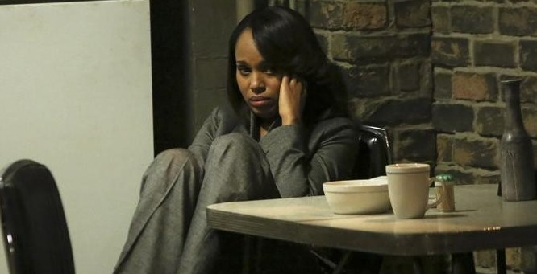
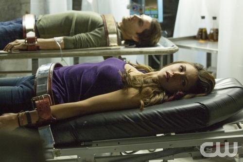
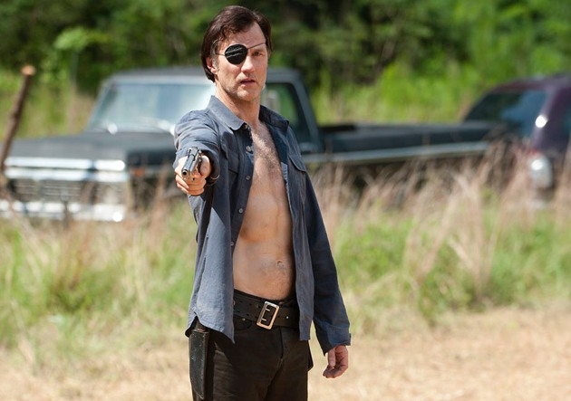

Scandal recap: Season: 3 Episode: 9 I've Committed a Sin
Sally Langston goes off the deep end as Olivia discovers the truth about her parents.
When did Scandal become part of the Saw franchise? When we last saw the Gladiators, Mama Pope was gnawing on her wrist as a pre-Thanksgiving snack. And on Thursday, we kicked off the episode with Huck gleefully torturing Quinn and then wrapped things up with a bloody finish (more on that later!). Meanwhile, any potentially soapy moments -- erotic photos (James and Daniel Douglas), a post-bondage makeout session (Quinn and Charlie), and a face-lick (shudder, Huck and Baby Huck) -- were just super creepy.
But let's lead you through this carnival ride step by step, just like Jigsaw would: Huck has Quinn wrapped up in duct tape after he discovers she's teamed up with B613. He's just about to tear her teeth out one by one when Quinn is saved by the bell: Olivia calls Huck to tell him her mother is alive and in her apartment. He tells her to get to the safe house, and Quinn is breathing a sigh of relief just as Huck decides he has time for at least one tooth. "What's that stupid thing the kids are saying? YOLO?" Huck asks, taking way too much joy in this. "YOLO, Quinn."
Meanwhile, in a different type of torture chamber, Sally Langston is meeting with campaign manager Leo Bergen and being told she has to pretend to be pro-choice in order to win as an Independent candidate. You'd think this would be difficult for the die-hard conservative, but within a minute of hearing Leo's speech, she is abandoning her belief system. I liked Sally better when she was a ride-or-die Republican. And speaking of dishonesty, Cyrus and James are trucking along pretending like nothing happened with the VP's husband. How long can that continue? Well, maybe for as long as Fitz and Mellie's sham of a marriage.
Back in the Pope & Associates safe house, the gang is wondering just how Maya Pope is alive after 22 years. "You can't show up with Dead Mama Pope and expect us to fall in line," Abby says, before hollering at Maya: "Where've you been all this time?" Fair question. When they realize she escaped Command, Huck and Jake make quick work of slicing a tracking chip out of Maya's neck. By the time Charlie shows up at the safe house, the chip is lying in a pool of blood. I'm beginning to not even flinch at the red corn syrup all over this show.
AND THEN, Cyrus' phone rings. It's Sally Langston. She's "committed a sin." A wide shot shows Daniel Douglas lying on the ground, bleeding from his back. Honestly, if you had given me all the options on a Clue board, I never would have picked Sally with a knife in the VP residence for a murder this week. Never in a million years. RIP to Daniel Douglas and to Sally's presidential hopes.
Wow, I have barely processed this ending. Will this be an open-and-shut murder case, or will someone help Sally bury the truth? Will Quinn kill Rowan before Olivia has a chance to talk to him about who her mom really is? Will Maya be stopped on her way to Hong Kong? And will David ever dump Abby over these endless favors? Share all your thoughts in the comments!
The Vampire Diaries recap: Season 5 Episode: 9 The Cell
 WebclipAs Elena learned Damon's dark history with the Whitmores, Katherine helped Stefan beat his PTSD in the best way possible.
We opened on July 11, 1953, when T-Bird Damon showed up in his white T-shirt and leather jacket at Salvatore Mansion to see Joseph Salvatore. Joe, it turns out, was a greedy bastard willing to sell Damon to a doctor who turned out to be Dr. Whitmore of the Augustines. Damon had managed to stab Joe in the neck, but Whitmore injected Damon with vervain and he was out. Fade to Wes, who informed Damon in present day that he was replacing the test subject he'd lost the night before. (RIP, Jesse. Didn't miss you for one second though.)
Katherine was writing in a journal at Stefan's request because he's worried she's going to kill herself. "Deep thoughts. Mortal coil. Blah, blah, blah, my hand's tired," she said. Katherine will never be the journaling type. She turned the tables on Stefan: He's still having his panic attacks and she can't work with people who can't give her 100 percent. Cue Caroline's arrival -- with the safe Stefan had been buried in.
Elena went to visit Aaron, who told her that campus security said Jesse killed himself. Aaron wants to hit the reset button, but Elena is the wrong person to ask about that. Plus, she needed to make this about her: She'd popped by to ask him about Wes, who's been his legal guardian since last summer when his aunt Sara died. Elena told him that her boyfriend Damon went to see Wes and no one's seen either of them since.
Flashback: Dr. Whitmore couldn't be compelled because he was wearing vervain. He had Damon restrained on a table for prodding because he knew vampire blood heals others and that their bodies heal themselves. "How I got this amazing body is nothing to do with science," Damon said. But Whitmore stabbed him in the eye anyway. In the words of Samantha Highfill, the colleague I was watching with: "The eyes and the ass are off-limits!"
Elena made Aaron see that it was weird that two of his friends committed suicide before the end of the first semester. She told him about Wes forging Megan's death certificate. Aaron wanted to find Wes to hear his side of the story. He took her to Whitmore House, and fortunately, he's Aaron Whitmore. He owns the building and school courtesy of the trust he inherited from his dead parents. She was able to enter because he invited her in. Elena saw her dad in a photo. Wes appeared and said Grayson Gilbert was one of the best doctors the Augustines ever had. And then he vervained Elena in the neck. "What the hell?" Aaron asked.
And confirmation! Aaron really hadn't known about vampires. Wes gave him a quick tutorial on vervain. Wes said Aaron's father trained him in the art of studying vampires. He'd been going to tell Aaron this story on his birthday -- what his family fought for and believed in. His legacy.
'The Walking Dead' recap: Season 4 Episode: 8 Gunfight at the Not Okay Corral
Rick and the Governor face off for control of the Prison (again).
The Governor goes into full politician mode as he convinces his group to march on the Prison. With Michonne and Hershel as captives, he plans on using them as bargaining chips — or pawns — to convince Rick and the gang to abandon the Prison. That way, they "don't need to kill anyone," assures the Governor before he adds, "but we need to be prepared to." He characterizes most of the Prison community as "thieves" and "murderers," which is ironic as that is exactly what the Governor is — a thief and murderer. He later calls Rick a "liar," which, again, is a representation of himself rather than the others.
Lilly is doubtful of the Governor's plan to move the camp into the Prison, reiterating her thoughts last episode that the camp need not find a better place. In a perfect example of "too little too late," she is also starting to have doubts about the Governor. She (finally) realizes that despite trusting this man with everything she holds dear practically the moment after she met him, he may not be who she thinks he is. When he tells her that he loves her, she responds, "I don't know who you are." By not keeping his "plan" secret from her, the Governor thinks he's making progress — at least from his most recent relationship. What he doesn't realize is that he's also revealing his psycho killer side, which is almost always a turn off for most women.
The Governor interrogates Michonne and Hershel, replacing his usual interrogation tactics like feeding people to Walkers or sexual assault with just talking face-to-face. He restates his plan to avoid bloodshed if possible, but Hershel hopes to convince him that the two groups can co-exist at the Prison. Yet we — along with the Governor and Michonne — know that it could never work, if not for the characters' issues with each other than for the sake of storytelling. We really need to get out of the Prison and, boy, do we.
Hershel attempts to appeal to the father in the Governor — displaying great strength in doing so since he knows what the Governor has already done to his daughter. (Don't call him that! But definitely do call him that if only to spite him.) He pleads, "If you understand what it's like to have a daughter, then how can you threaten to kill someone else's?" The Governor simply replies, “Because they aren’t mine.”
And so he encapsulates his post-apocalyptic philosophy, which is shared by many characters on The Walking Dead. Protect what’s mine and to hell with anything or anyone else. Rick also had this mentality, but it still remains to be seen which view leads to a better life. The three questions and even Martinez’s two statements seem more morally sound than the Governor's obsession with survival. But can anyone ultimately survive the Zombiepocalypse?